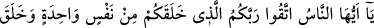

İNSANLIK TEK BİR NEFİSTEN
Rahmân ve Rahîm olan Allah’ın adıyla.
1. Ey insanlar! Sizi bir tek nefisten yaratan ve ondan da eşini yaratan ve
ikisinden birçok erkekler ve kadınlar üretip yayan Rabbinizden sakının. Adını
kullanarak birbirinizden dilekte bulunduğunuz Allah’tan ve akrabalık haklarına
riâyetsizlikten de sakının. Şüphesiz Allah sizin üzerinizde gözetleyicidir.
“Ey insanlar” hitâbı, o zaman hayatta olanlarla onlardan sonra gelenlere umûmî bir
hitâbdır, yoksa daha evvel gelip geçenlere değil. Çünkü onlar bizim şerîatımıza göre
ibâdette bulunmuyorlardı. Eğer bu hitap bütün âdemoğullarına olsaydı, onların da bizim
şerîatımıza göre ibâdet etmeleri gerekirdi ki, böyle bir şey imkansızdır.
Aralarınızdaki hakları ve gözetip kollamanız gereken şeyleri muhâfaza husûsunda
“Rabbinizden korkun” onları ihmâl etmeyin ve birleştirmekle emrolunduğunuz şeyleri
ayırmayın “ki, O sizi bir tek nefisten” tek bir asıldan -ki o babanız Âdem’in nefsidir-
“yarattı.” Sûret ve renkleriniz farklı olmak üzere halden hâle yaratılmanızı takdîr etti.
Sâdece Yaratan’dan sakınılması için âyette “sakınma”, “yaratma” nimetinin peşinden
getirilmiştir. Yine insanların tek bir babadan olduğu beyân edilmiştir. Çünkü onların
birbirlerini sıkıştırmaya son vermelerinin emredilmesinde karşılıklı sevgi-saygı
göstermeye de teşvik vardır. “Ve o nefisten;” Yâni o nefsin bir parçasından, Âdem’in
sol kaburga kemiklerinden birinden “eşini”, ananız Havvâ’yı “yarattı.”
Rivâyet edilir ki: Allah Teâlâ, Âdem’i yaratıp cennete yerleştirdiğinde ona uyku
verdi. O uyur-uyanık bir haldeyken de kaburgasının üst tarafından Havvâ’yı yarattı.
Âdem uyandığında Havvâ’yı yanında buldu. Kendisine ait bir parçadan yaratılmış
olduğundan hemen ona meyledip onunla ülfet etti. Havvâ, diğer insanlardan önce
yaratıldığı halde, âyet-i celilede daha sonra zikredilmiştir. Çünkü buradaki “vav” harfi
öncelik-sonralık mânâsı taşımamaktadır.
“Ve ikisinden” yâni bu nefis ve ondan yaratılan eşinden üreme ve tenasül yoluyla
“bir çok erkek ve kadın” bir çok oğul ve kız “üretti”, dağıtıp yaydı. Âyet-i kerîmede
kadınların değil sâdece erkeklerin çoklukla vasfedilmesiyle yetinilmiştir. O halde
hikmet, kadınların da çok olmasını gerektirir.
Takvâ emrinin insanların yaratılış kıssasından önceye alınması, daha sonraki âyetlerin